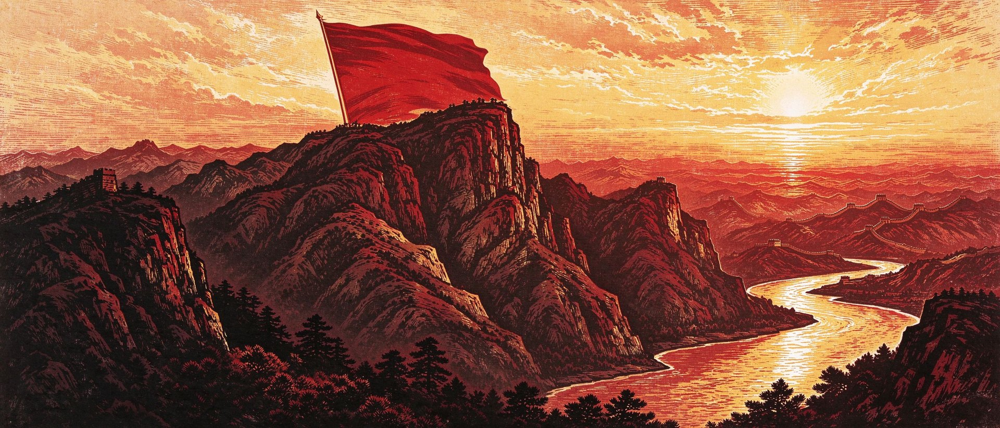
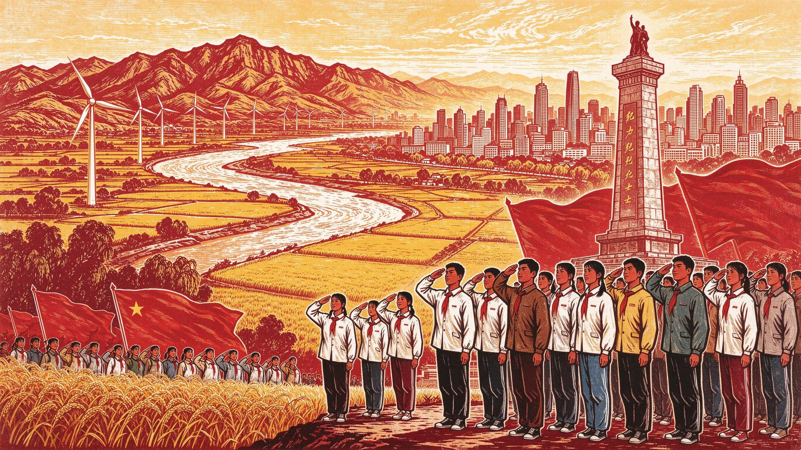

伍
红色地图 · 塞上地标
RED ATLAS OF NINGXIA
红色地标（点击查看）
城市
黄河
AIGC 据史料创作

地图为红色地标示意图（非精确地理比例）· 展出画面均为人工智能依据公开史料创作的数字艺术作品，非真实历史影像

从六盘山的红旗到任山河的丰碑，从盐池的盐湖到银川的长夜——
以数字之名，重现塞上热土上永不褪色的忠诚信仰。
PROLOGUE
在中国革命的版图上，宁夏是红军长征的结束地，是陕甘宁边区的重要组成部分，是党的民族区域自治制度的重要实践地，也是人民解放军解放宁夏的决胜之地。这片被黄河滋养、被群山环抱的塞上热土，留下了共产党人、红军将士与回汉群众用热血写就的忠诚篇章。
红二方面军总指挥部与红一方面军主力在西吉将台堡会师，这是红军长征最后一次会师，标志着震惊中外的两万五千里长征胜利结束。
西征红军解放盐池县城，建立宁夏第一个县级红色政权。盐池是宁夏唯一的革命老区，红旗在这里一直坚持到全国解放，成为边区经济支柱。
任山河战斗打开解放宁夏南大门，十九兵团乘胜进军；1949年9月23日银川解放，塞上大地迎来新生。
HALL OF MARTYRS
点击每一位英烈的展牌，可查阅其事迹，并由 AI 讲解员朗读他们的故事。
注：本长廊陈列八位烈士与一位革命先驱（张子华，1942年积劳成疾，病逝于延安）。为尊重英烈，本画廊不以人工智能生成烈士肖像，统一以青松丰碑之象铭记。
TIMELINE 1935—2024
POEM OF LIUPAN MOUNTAIN
一首词，给了宁夏最响亮的精神注脚，也给了本画廊贯穿始终的母题——长城垛口纹。
天高云淡，望断南飞雁。
不到长城非好汉，屈指行程二万。
六盘山上高峰，红旗漫卷西风。
今日长缨在手，何时缚住苍龙？
1935年10月7日，中央红军在六盘山青石嘴遭遇敌军骑兵，一战告捷，缴获大量战马、弹药与物资，打开了通往陕北革命根据地的最后屏障。毛泽东登上六盘山巅，回望万水千山、展望革命前途，吟出这首词的初稿——《长征谣》。
词稿几经修改，1957年1月在《诗刊》创刊号以《清平乐·六盘山》为题公开发表；1961年9月，毛泽东应宁夏同志之嘱，在江西庐山召开中央工作会议期间亲笔手书这首词赠予宁夏。“不到长城非好汉”从此成为宁夏最鲜明的精神标识。
RED ATLAS OF NINGXIA
地图为红色地标示意图（非精确地理比例）· 展出画面均为人工智能依据公开史料创作的数字艺术作品，非真实历史影像
ETHNIC UNITY IN NINGXIA
宁夏是回汉各族人民共同的家园。红军在宁夏大地上的民族政策实践，是党的民族区域自治制度的伟大先声，至今仍在延续。
红二十五军长征进入西吉单家集，部队严格执行民族纪律：不进清真寺、不食猪肉、不借回族群众的炊具。军首长向陕义堂清真寺赠送锦幛，“回汉兄弟亲如一家”八个字被回族群众传为佳话。
毛泽东夜宿单家集，在清真寺土炕上盘腿而坐，与阿訇马德海一边喝盖碗茶一边促膝长谈：讲北上抗日的主张，听回族的宗教与风俗。一夜长谈，让回族群众第一次真正认识了共产党和红军。
陕甘宁省豫海县回民自治政府在同心清真大寺召开成立大会，马和福当选主席。它第一次把民族平等、民族自治的主张写进了人民政权建设的实践，是民族区域自治制度的重要源头。11月12日，红军三大主力会聚同心，自治政府召开军民联欢大会，朱德、彭德怀、贺龙等出席，马和福代表回汉群众致欢迎词。
豫海县回民自治政府虽只存在了半年，但它证明了一件事：民族平等、团结自治，不是口号，而是可以被建立起来的生活。
WEBGL VIRTUAL GALLERY
基于 WebGL 的沉浸式红色展厅：十五幅 AIGC 套色版画沿红毯两侧依次陈列，拖动鼠标环视四周，点击画作即可移步聚焦并聆听讲解，巡游尽头是“革命烈士永垂不朽”巨幅壁画。
CATALOG
展厅为实时渲染的 WebGL 场景，展陈画面与本画廊 AIGC 展品同源；低性能设备会自动降级为平面展厅，展品讲解采用预录真人语音并以自然语音合成兜底
RED MEMORIALS ACROSS NINGXIA
数字画廊之外，六座纪念馆（园）矗立在塞上大地，是可踏访、可致敬的精神坐标。点击“一键导航”，即可在地图中打开前往。
长征国家文化公园核心区之一，沿 2.5 公里“红军小道”登峰，18 组雕塑再现长征重大场景；山巅纪念碑下，“不到长城非好汉”的词墙最为震撼。
1936年10月22日红一、二方面军在此胜利会师，这是红军长征最后一次会师，标志着二万五千里长征胜利结束。会师纪念碑、会师广场与红军寨，是“行走的思政课”热门研学地。
国内唯一以红军西征为主题的纪念场所，依托豫海县回民自治政府成立大会旧址而建，投影与电动沙盘再现西征红军进入同心全过程，系统展示西征战役与民族自治实践。
全国100个红色旅游经典景区之一，含革命烈士纪念馆、苏维埃纪念馆、毛泽民纪念馆；占地约400亩，铭记老区13年红旗不倒。1938—1943年，从盐池运出的食盐达12.5亿公斤。
崔景岳、马文良、孟长有三烈士就义旧址所在。1991年建碑，原第十三小学更名景岳小学；碑前“传承”雕塑形似火炬，石墙镌刻“1941.4.17”，被一代代少先队员守护。
1955年为纪念任山河战斗中牺牲的364名指战员而建，今有396名烈士长眠于此，陵园占地4万平方米。宁夏现有银川、贺兰山、同心、吴忠涝河桥、任山河5处国家级烈士纪念设施。

从1935到今天，红旗漫卷过的土地上，新生的塞上早已山河锦绣。英烈未竟的事业，正由一代代青年接续前行。
轻触鲜花，为宁夏革命烈士献上一瓣心香
山河无恙，吾辈自强。
我们将以烈士之忠勇为灯，以“不到长城非好汉”的精神为炬，
在新时代的长征路上，续写塞上青年的忠诚与担当。